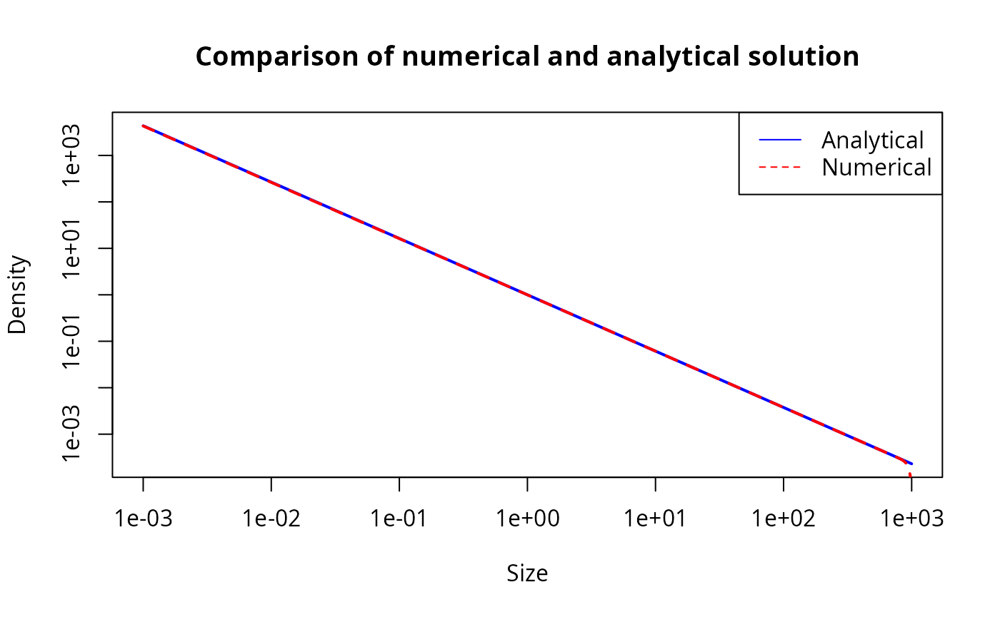
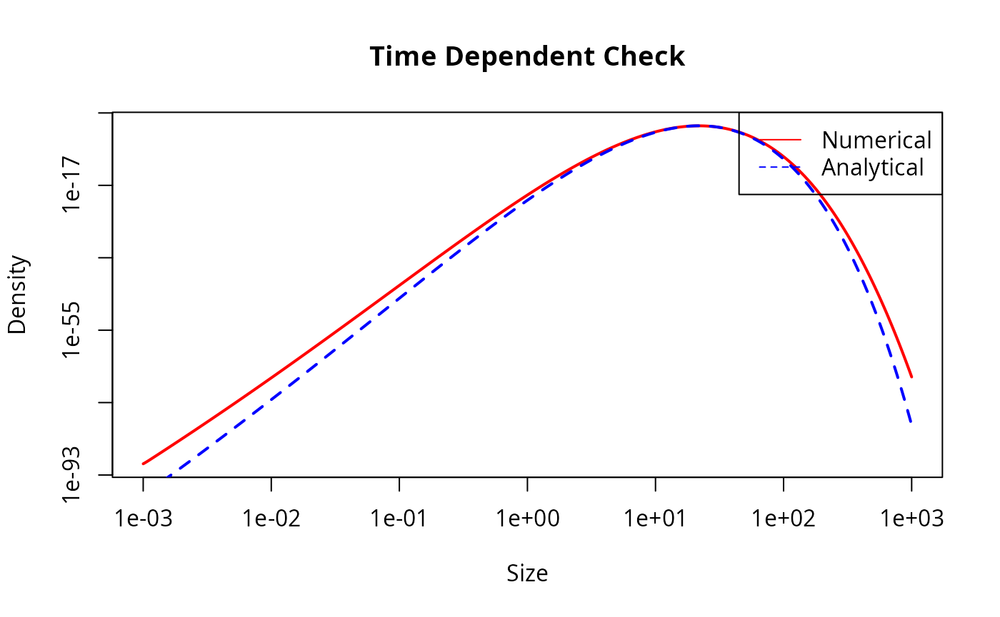

This vignette describes an analytical test for the transport equation solver used in mizer.
The transport equation
The time evolution of the size spectrum \(N(w)\) is described by the McKendrick-von Foerster equation with an added diffusion term:
\[\begin{equation} \frac{\partial N}{\partial t} + \frac{\partial}{\partial w} \left( g N - \frac{1}{2}\frac{\partial(D N)}{\partial w} \right) = -\mu N \end{equation}\]
where \(g(w)\) is the growth rate, \(\mu(w)\) is the mortality rate and \(D(w)\) is the diffusion rate.
Analytical solution for power-law rates
We look for a steady state solution \(N(w)\) when the rates are power laws of the form:
\[\begin{align} g(w) &= A w^p \\ \mu(w) &= B w^{p-1} \\ D(w) &= K w^{p+1} \end{align}\]
We try a power-law ansatz for the solution: \[ N(w) = C w^{-\lambda} \] Substituting these forms into the transport equation at steady state (\(\partial N / \partial t = 0\)):
\[ \frac{\partial}{\partial w} \left( A w^p C w^{-\lambda} - \frac{1}{2}\frac{\partial}{\partial w}(K w^{p+1} C w^{-\lambda}) \right) = - B w^{p-1} C w^{-\lambda} \]
Simplifying the term inside the derivative: \[ D N = K C w^{p+1-\lambda} \] \[ \frac{\partial(D N)}{\partial w} = K C (p+1-\lambda) w^{p-\lambda} \] \[ g N - \frac{1}{2}\frac{\partial(D N)}{\partial w} = \left( A - \frac{1}{2} K (p+1-\lambda) \right) C w^{p-\lambda} \] Let \(J_0 = C \left( A - \frac{1}{2} K (p+1-\lambda) \right)\). Then the flux is \(J = J_0 w^{p-\lambda}\).
Differentiating flux with respect to \(w\): \[ \frac{\partial J}{\partial w} = J_0 (p-\lambda) w^{p-\lambda-1} \]
The RHS is: \[ -\mu N = - B C w^{p-1-\lambda} \]
Equating LHS and RHS: \[ C \left( A - \frac{1}{2} K (p+1-\lambda) \right) (p-\lambda) w^{p-\lambda-1} = - B C w^{p-\lambda-1} \]
Dividing by \(C w^{p-\lambda-1}\) (assuming \(C \neq 0\) and \(w \neq 0\)): \[ \left( A - \frac{1}{2} K (p+1-\lambda) \right) (p-\lambda) + B = 0 \]
Let \(x = p - \lambda\). Then \(p + 1 - \lambda = x + 1\). The equation becomes: \[ \left( A - \frac{1}{2} K (x+1) \right) x + B = 0 \] \[ Ax - \frac{1}{2} K x^2 - \frac{1}{2} K x + B = 0 \] Multiply by -2: \[ K x^2 - (2A - K) x - 2B = 0 \]
This is a quadratic equation for \(x = p - \lambda\). The solutions are: \[ x = \frac{(2A - K) \pm \sqrt{(2A - K)^2 + 8KB}}{2K} \]
We are interested in the solution that corresponds to the limit of small diffusion \(K \to 0\). In that limit, \(g N \sim C A w^{p-\lambda}\) and \(\frac{\partial (gN)}{\partial w} \sim C A (p-\lambda) w^{p-\lambda-1}\). The transport equation without diffusion is \(\frac{\partial (gN)}{\partial w} = -\mu N\). \[ A (p-\lambda) = -B \implies x = p-\lambda = -B/A \] Since \(A, B > 0\), \(x\) should be negative. Let’s check the roots. \((2A-K)^2 + 8KB > (2A-K)^2\), so the square root is larger than \(|2A-K|\). The term \((2A-K)\) is positive for small \(K\). The positive root is \(\frac{(2A-K) + \text{larger}}{2K} > 0\). The negative root is \(\frac{(2A-K) - \text{larger}}{2K} < 0\). So we need the negative root.
\[ \lambda = p - \frac{(2A - K) - \sqrt{(2A - K)^2 + 8KB}}{2K} \]
Numerical verification
We verify this analytical solution by considering a single species in
mizer and checking if the project() function keeps the
system in this steady state.
library(mizer)
# Parameters
p <- 0.7
A <- 1
B <- 0.5
K <- 0.1
# Calculate lambda
# coefficients for K x^2 - (2A - K) x - 2B = 0
a_quad <- K
b_quad <- -(2*A - K)
c_quad <- -2*B
det <- b_quad^2 - 4 * a_quad * c_quad
x <- (-b_quad - sqrt(det)) / (2 * a_quad)
lambda <- p - x
# Set up mizer params
# We create a dummy species
params <- newMultispeciesParams(data.frame(species = "Test",
w_inf = 1000,
w_mat = 100,
beta = 100,
sigma = 1,
k_vb = 0.1),
no_w = 1000, min_w = 1e-3)
#> Warning in validGivenSpeciesParams(species_params): The species parameter data
#> frame is missing a `w_max` column. I am copying over the values from the
#> `w_inf` column. But note that `w_max` should be the maximum size of the largest
#> individual, not the asymptotic size of an average indivdidual.
#> Warning in validGivenSpeciesParams(species_params): The species parameter data
#> frame is missing a `w_max` column. I am copying over the values from the
#> `w_inf` column. But note that `w_max` should be the maximum size of the largest
#> individual, not the asymptotic size of an average indivdidual.
#> Because you have n != p, the default value for `h` is not very good.
#> Because the age at maturity is not known, I need to fall back to using
#> von Bertalanffy parameters, where available, and this is not reliable.
#> No ks column so calculating from critical feeding level.
#> Using z0 = z0pre * w_max ^ z0exp for missing z0 values.
#> Using f0, h, lambda, kappa and the predation kernel to calculate gamma.
# Define custom rate functions
# Growth
start_growth <- function(params, ...) {
matrix(A * params@w^p, nrow = 1, byrow = TRUE)
}
# Mort
start_mort <- function(params, ...) {
matrix(B * params@w^(p-1), nrow = 1, byrow = TRUE)
}
# RDD (Constant Flux)
constant_rdd <- function(rdi, species_params, params, ...) {
w_min <- 1e-3 # Use the strict lower boundary of the system
# Flux J = N(w) * (g(w) - 0.5 * d/dw D(w))
# J = C * w^(p-lambda) * (A - 0.5 * K (p + 1 - lambda))
# C = 1 (from initial N)
J_min <- w_min^(p - lambda) * (A - 0.5 * K * (p + 1 - lambda))
structure(rep(J_min, length(rdi)), names = names(rdi))
}
# Assign to params
params <- setRateFunction(params, "EGrowth", "start_growth")
params <- setRateFunction(params, "Mort", "start_mort")
params <- setRateFunction(params, "RDD", "constant_rdd")
# Set diffusion
ext_diffusion(params)[1, ] <- K * w(params)^(p + 1)
# We also need to switch off resource dynamics and other things to avoid interference
params <- setResource(params, resource_dynamics = "resource_constant")
initialNResource(params) <- 0
# Set initial N to analytical solution
initialN(params) <- matrix(w(params)^(-lambda), nrow = 1, byrow = TRUE)
# Run project
# We verify that N stays constant.
sim <- project(params, t_max = 1, dt = 0.001)
# Compare final N with initial N
n0 <- initialN(params)[1, ]
n1 <- finalN(sim)[1, ]
# Plot
plot(w(params), n0, log="xy", type="l", col="blue", lwd=2,
main="Comparison of numerical and analytical solution",
xlab="Size", ylab="Density")
lines(w(params), n1, col="red", lty=2, lwd=2)
legend("topright", legend=c("Analytical", "Numerical"),
col=c("blue", "red"), lty=c(1, 2))
# Calculate relative error
# Ignore the boundaries where boundary conditions apply
idx <- 10:(length(w(params))-10)
rel_err <- abs(n1[idx] - n0[idx]) / n0[idx]
max_rel_err <- max(rel_err)
print(paste("Maximum relative error (excluding boundaries):", max_rel_err))
#> [1] "Maximum relative error (excluding boundaries): 0.0384619887553153"
if (max_rel_err < 0.05) {
print("Test passed: Numerical solution stays close to analytical steady state.")
} else {
print("Test failed: Numerical solution deviates from analytical steady state.")
}
#> [1] "Test passed: Numerical solution stays close to analytical steady state."Time-dependent analytical solution
To facilitate an analytical solution for time-dependent problems, we first transform the size variable \(w\) to a new variable \(x\): \[ x = \frac{w^{1-p}}{1-p} \] Assuming \(p \neq 1\). Then \(w = ((1-p)x)^{\frac{1}{1-p}}\) and \(\frac{dx}{dw} = w^{-p}\).
We define the density in \(x\)-space, \(\tilde{N}(x, t)\), such that \(\tilde{N}(x, t) dx = N(w, t) dw\). Thus: \[ \tilde{N}(x, t) = N(w, t) \frac{dw}{dx} = N(w, t) w^p \]
Substituting this into the transport equation and simplifying leads to a PDE of the form: \[ \frac{\partial \tilde{N}}{\partial t} = V x \frac{\partial^2 \tilde{N}}{\partial x^2} + (V - U) \frac{\partial \tilde{N}}{\partial x} - \frac{b}{x} \tilde{N} \] where: * \(U = A - \frac{1}{2}K\) * \(V = \frac{1}{2} K (1-p)\) * \(b = \frac{B}{1-p}\)
The fundamental solution (Green’s function) for this equation, describing the evolution of an initial Dirac delta distribution \(\tilde{N}(x, 0) = \delta(x - x_0)\), is given by: \[ G(x, t; x_0) = \frac{1}{Vt} \left( \frac{x}{x_0} \right)^{\frac{U}{2V}} \exp\left( -\frac{x+x_0}{Vt} \right) I_\nu \left( \frac{2\sqrt{xx_0}}{Vt} \right) \] where \(I_\nu\) is the modified Bessel function of the first kind of order \(\nu\), given by: \[ \nu = \frac{1}{V} \sqrt{U^2 + 4Vb} \]
The solution in terms of the original size distribution \(N(w, t)\) is then: \[ N(w, t) = G(x(w), t; x(w_0)) w^{-p} \]
Numerical verification
We verify this time-dependent solution by starting the simulation with the analytical distribution at a small time \(t_{start} > 0\) (to avoid the singularity at \(t=0\)) and projecting it to a later time \(t_{end}\).
# Function to calculate N analytic
N_analytic <- function(w, t, w0, t0, params) {
# Parameters
p <- 0.7
A <- 1
B <- 0.5
K <- 0.1
# Transformed parameters
U <- A - 0.5 * K
V <- 0.5 * K * (1 - p)
b <- B / (1 - p)
nu <- sqrt((U/V)^2 + 4 * b / V)
# Time elapsed
dt <- t - t0
if (dt <= 0) stop("t must be greater than t0")
# Transform to x
x <- w^(1 - p) / (1 - p)
x0 <- w0^(1 - p) / (1 - p)
# Argument for Bessel
z <- 2 * sqrt(x * x0) / (V * dt)
# Logarithm of N_tilde using scaled Bessel to avoid overflow
bessel_scaled <- besselI(z, nu, expon.scaled = TRUE)
log_N_tilde <- -log(V * dt) +
(U / (2 * V)) * log(x / x0) -
(x + x0) / (V * dt) +
z +
log(bessel_scaled)
N_tilde <- exp(log_N_tilde)
# Transform back to N(w)
N <- N_tilde * w^(-p)
return(N)
}
# Initial Condition
w0 <- 10
t_start <- 1
t_end <- 2
# Set RDD to exact analytical flux
time_dep_rdd <- function(rdi, species_params, params, t, ...) {
# Parameters (must match those used in N_analytic)
p <- 0.7
A <- 1
B <- 0.5
K <- 0.1
w0 <- 10
t0 <- 0
# Transformed parameters
U <- A - 0.5 * K
V <- 0.5 * K * (1 - p)
b <- B / (1 - p)
nu <- sqrt((U/V)^2 + 4 * b / V)
# Time elapsed
dt <- t - t0
if (dt <= 0) return(structure(rep(0, length(rdi)), names = names(rdi)))
# Boundary w_min
w_min <- min(params@w)
x <- w_min^(1 - p) / (1 - p)
x0 <- w0^(1 - p) / (1 - p)
# Argument for Bessel
z <- 2 * sqrt(x * x0) / (V * dt)
# Calculate scaled Bessel ratio I_{nu+1}/I_nu
# besselI returns I_nu * exp(-z) with expon.scaled=TRUE
I_nu <- besselI(z, nu, expon.scaled = TRUE)
I_nu_plus_1 <- besselI(z, nu + 1, expon.scaled = TRUE)
if (I_nu == 0) {
J <- 0
} else {
ratio <- I_nu_plus_1 / I_nu
# Calculate G (N_tilde) at boundary
# log(G) = ...
log_G <- -log(V * dt) +
(U / (2 * V)) * log(x / x0) -
(x + x0) / (V * dt) +
z +
log(I_nu) # I_nu is already scaled, so we add z back... wait.
# The formula in N_analytic: log_N_tilde = ... + z + log(bessel_scaled)
# This reconstructs the unscaled log value. Correct.
G <- exp(log_G)
# Flux J = G * [ U/2 + x/dt - (V*z/2) * ratio - (V*nu/2) ]
term <- U/2 + x/dt - (V * z / 2) * ratio - (V * nu / 2)
J <- G * term
}
structure(rep(J, length(rdi)), names = names(rdi))
}
params <- setRateFunction(params, "RDD", "time_dep_rdd")
# Set initial N from analytical solution
initial_n <- N_analytic(w(params), t_start, w0, 0, params)
initialN(params) <- matrix(initial_n, nrow = 1, byrow = TRUE)
# Run project
sim <- project(params, t_max = t_end - t_start, dt = 0.001)
# Compare
final_n_num <- finalN(sim)[1, ]
final_n_ana <- N_analytic(w(params), t_end, w0, 0, params)
# Plot
plot(w(params), final_n_num, log="xy", type="l", col="red", lwd=2,
main="Time Dependent Check", xlab="Size", ylab="Density")
lines(w(params), final_n_ana, col="blue", lty=2, lwd=2)
legend("topright", legend=c("Numerical", "Analytical"), col=c("red", "blue"), lty=c(1, 2))
# Robust comparison metrics
# 1. Total Abundance (Conservation)
total_n_num <- sum(final_n_num * params@dw)
total_n_ana <- sum(final_n_ana * params@dw)
rel_err_total <- abs(total_n_num - total_n_ana) / total_n_ana
# 2. Peak Location
peak_idx_num <- which.max(final_n_num)
peak_idx_ana <- which.max(final_n_ana)
peak_w_num <- w(params)[peak_idx_num]
peak_w_ana <- w(params)[peak_idx_ana]
rel_err_peak_loc <- abs(peak_w_num - peak_w_ana) / peak_w_ana
# 3. Peak Height
peak_val_num <- max(final_n_num)
peak_val_ana <- max(final_n_ana)
rel_err_peak_val <- abs(peak_val_num - peak_val_ana) / peak_val_ana
print(paste("Total Abundance Error:", rel_err_total))
#> [1] "Total Abundance Error: 7.06656338230903e-05"
print(paste("Peak Location Error:", rel_err_peak_loc))
#> [1] "Peak Location Error: 0.013734153868719"
print(paste("Peak Height Error:", rel_err_peak_val))
#> [1] "Peak Height Error: 0.0301244310252145"
# Pass conditions: < 5% mass error, < 5% location shift, < 40% height difference (diffusive flattening)
if (rel_err_total < 0.05 && rel_err_peak_loc < 0.05 && rel_err_peak_val < 0.4) {
print("Time-dependent test passed.")
} else {
print("Time-dependent test failed.")
}
#> [1] "Time-dependent test passed."Numerical Diffusion Test
The upwind scheme introduces a numerical diffusion \(D_{num} \approx g(w) \Delta w\). We verify this by running the projection with zero physical diffusion and comparing the result to the analytical steady state solution for a system with diffusion \(D(w) = g(w) \Delta w\).
In this test, we use the same power law rates: \(g(w) = A w^p\). \(\Delta w \approx w \delta\) where \(\delta = \ln(10^{\Delta x}) = \ln(\beta)\). So \(D_{num} = g(w) \Delta w + g(w)^2 \Delta t\). For power law rates \(g(w) = A w^p\), and grid spacing \(\Delta w \approx w \delta\), this becomes: \(D_{num} \approx A w^p \cdot w \delta + (A w^p)^2 \Delta t = (A \delta) w^{p+1} + A^2 \Delta t w^{2p}\). To allow an analytic solution with a simple power-law diffusion \(D = K w^{p+1}\), we set \(p=1\) for this test. Then \(D_{num} \approx (A \delta + A^2 \Delta t) w^2\). This corresponds to \(K = A \delta + A^2 \Delta t\).
# Parameters for the test
p_test <- 1 # Use p=1 to match diffusion scaling
A_test <- 1
B_test <- 0.5
# Helper: Growth rate
start_growth_test <- function(params, ...) {
matrix(A_test * params@w^p_test, nrow = 1, byrow = TRUE)
}
# Helper: Mortality rate
start_mort_test <- function(params, ...) {
matrix(B_test * params@w^(p_test-1), nrow = 1, byrow = TRUE)
}
# Helper: RDD
# We need to calculate K_num inside because it depends on params (resolution)
constant_rdd_test <- function(rdi, species_params, params, ...) {
# Calculate effective K based on grid resolution
beta_grid <- params@w[2] / params@w[1]
# Grid spacing beta approx 1+delta
# K_spatial = A * (beta - 1)
# K_time = A^2 * dt
# We use dt = 0.01 in the project call below
dt <- 0.01
K_loc <- A_test * (beta_grid - 1) + A_test^2 * dt
# Calculate lambda for this K
# Solve quadratic: K x^2 - (2A - K) x - 2B = 0
a_q <- K_loc
b_q <- -(2*A_test - K_loc)
c_q <- -2*B_test
det <- b_q^2 - 4 * a_q * c_q
x <- (-b_q - sqrt(det)) / (2 * a_q)
lam <- p_test - x
w_min <- min(params@w)
J_min <- w_min^(p_test - lam) * (A_test - 0.5 * K_loc * (p_test + 1 - lam))
structure(rep(J_min, length(rdi)), names = names(rdi))
}
# Function to perform the numerical diffusion test
run_numerical_diffusion_test <- function(no_w) {
# Create params
params <- newMultispeciesParams(data.frame(species = "Test",
w_inf = 1000,
w_mat = 100,
beta = 100,
sigma = 1,
k_vb = 0.1),
no_w = no_w, min_w = 1e-3, max_w = 1000)
# Set rates
params <- setRateFunction(params, "EGrowth", "start_growth_test")
params <- setRateFunction(params, "Mort", "start_mort_test")
params <- setRateFunction(params, "RDD", "constant_rdd_test")
# NO physical diffusion
# We set the diffusion matrix to zero
ext_diffusion(params)[] <- 0
params <- setResource(params, resource_dynamics = "resource_constant")
initialNResource(params) <- 0
# Calculate analytic initial condition to start close to steady state
# We use the same logic as in constant_rdd_test to get lambda
beta_grid <- params@w[2] / params@w[1]
K_loc <- A_test * (beta_grid - 1)
a_q <- K_loc
b_q <- -(2*A_test - K_loc)
c_q <- -2*B_test
det <- b_q^2 - 4 * a_q * c_q
x <- (-b_q - sqrt(det)) / (2 * a_q)
lam <- p_test - x
# Initialize
initialN(params) <- matrix(params@w^(-lam), nrow = 1, byrow = TRUE)
# Project
sim <- project(params, t_max = 5, dt = 0.01)
n0 <- initialN(params)[1, ]
n1 <- finalN(sim)[1, ]
# Compare (ignore boundaries)
idx <- 10:(length(params@w)-10)
# Calculate error
err <- abs(n1[idx] - n0[idx]) / n0[idx]
mean(err)
}
# Run the test
err_100 <- run_numerical_diffusion_test(100)
#> Warning in validGivenSpeciesParams(species_params): The species parameter data
#> frame is missing a `w_max` column. I am copying over the values from the
#> `w_inf` column. But note that `w_max` should be the maximum size of the largest
#> individual, not the asymptotic size of an average indivdidual.
#> Warning in validGivenSpeciesParams(species_params): The species parameter data
#> frame is missing a `w_max` column. I am copying over the values from the
#> `w_inf` column. But note that `w_max` should be the maximum size of the largest
#> individual, not the asymptotic size of an average indivdidual.
#> Because you have n != p, the default value for `h` is not very good.
#> Because the age at maturity is not known, I need to fall back to using
#> von Bertalanffy parameters, where available, and this is not reliable.
#> No ks column so calculating from critical feeding level.
#> Using z0 = z0pre * w_max ^ z0exp for missing z0 values.
#> Using f0, h, lambda, kappa and the predation kernel to calculate gamma.
err_400 <- run_numerical_diffusion_test(400)
#> Warning in validGivenSpeciesParams(species_params): The species parameter data
#> frame is missing a `w_max` column. I am copying over the values from the
#> `w_inf` column. But note that `w_max` should be the maximum size of the largest
#> individual, not the asymptotic size of an average indivdidual.
#> Warning in validGivenSpeciesParams(species_params): The species parameter data
#> frame is missing a `w_max` column. I am copying over the values from the
#> `w_inf` column. But note that `w_max` should be the maximum size of the largest
#> individual, not the asymptotic size of an average indivdidual.
#> Because you have n != p, the default value for `h` is not very good.
#> Because the age at maturity is not known, I need to fall back to using
#> von Bertalanffy parameters, where available, and this is not reliable.
#> No ks column so calculating from critical feeding level.
#> Using z0 = z0pre * w_max ^ z0exp for missing z0 values.
#> Using f0, h, lambda, kappa and the predation kernel to calculate gamma.
print(paste("Mean relative error with 100 bins:", err_100))
#> [1] "Mean relative error with 100 bins: 0.0335390242331932"
print(paste("Mean relative error with 400 bins:", err_400))
#> [1] "Mean relative error with 400 bins: 0.00716983337814119"
# Check success
if (err_400 < 0.05) {
print("Numerical diffusion test passed: Numerical solution (D=0) matches Analytic solution (D=D_num).")
} else {
print("Numerical diffusion test failed.")
}
#> [1] "Numerical diffusion test passed: Numerical solution (D=0) matches Analytic solution (D=D_num)."